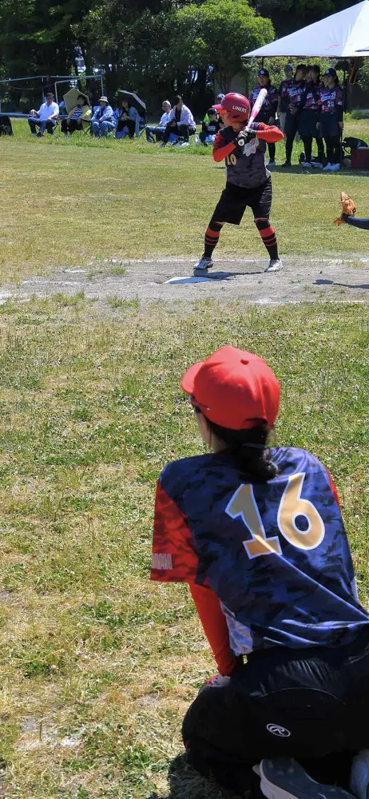

MEMBER INTERVIEW
メンバーインタビュー
好きなソフトボールを、仲間と一緒に。
ライナーズには、さまざまな経験や想いを持つメンバーが集まっています。参加のきっかけやチームの魅力を、それぞれの言葉でお届けします。
ライナーズの仲間たち
横浜市港北区のライナーズで、
ソフトボールを楽しみませんか？
ライナーズ（LINERS）は、神奈川県横浜市港北区を中心に活動するレディース／エルダーソフトボールチームです。
経験やブランクを問わず、見学・体験を歓迎しています。参加をご希望の方は、InstagramのDMからお気軽にお問い合わせください。
\ チームメンバー募集中！ /
お問い合わせはこちら！